Graphical posterior predictive checks using the bayesplot package
Jonah Gabry
2025-12-12
Source:vignettes/graphical-ppcs.Rmd
graphical-ppcs.RmdIntroduction
This vignette focuses on graphical posterior predictive checks (PPC). Plots of parameter estimates from MCMC draws are covered in the separate vignette Plotting MCMC draws, and MCMC diagnostics are covered in the Visual MCMC diagnostics vignette.
Graphical posterior predictive checks (PPCs)
The bayesplot package provides various plotting functions for graphical posterior predictive checking, that is, creating graphical displays comparing observed data to simulated data from the posterior predictive distribution (Gabry et al, 2019).
The idea behind posterior predictive checking is simple: if a model is a good fit then we should be able to use it to generate data that looks a lot like the data we observed. To generate the data used for posterior predictive checks (PPCs) we simulate from the posterior predictive distribution. This is the distribution of the outcome variable implied by a model after using the observed data \(y\) (a vector of \(N\) outcome values) to update our beliefs about unknown model parameters \(\theta\). The posterior predictive distribution for observation \(\widetilde{y}\) can be written as \[p(\widetilde{y} \,|\, y) = \int p(\widetilde{y} \,|\, \theta) \, p(\theta \,|\, y) \, d\theta.\] Typically we will also condition on \(X\) (a matrix of predictor variables).
For each draw (simulation) \(s = 1, \ldots, S\) of the parameters from the posterior distribution, \(\theta^{(s)} \sim p(\theta \,|\, y)\), we draw an entire vector of \(N\) outcomes \(\widetilde{y}^{(s)}\) from the posterior predictive distribution by simulating from the data model conditional on parameters \(\theta^{(s)}\). The result is an \(S \times N\) matrix of draws \(\widetilde{y}\).
When simulating from the posterior predictive distribution we can use either the same values of the predictors \(X\) that we used when fitting the model or new observations of those predictors. When we use the same values of \(X\) we denote the resulting simulations by \(y^{rep}\), as they can be thought of as replications of the outcome \(y\) rather than predictions for future observations (\(\widetilde{y}\) using predictors \(\widetilde{X}\)). This corresponds to the notation from Gelman et al. (2013) and is the notation used throughout the package documentation.
Using the replicated datasets drawn from the posterior predictive
distribution, the functions in the bayesplot package
create various graphical displays comparing the observed data \(y\) to the replications. The names of the
bayesplot plotting functions for posterior predictive
checking all have the prefix ppc_.
Setup
In addition to bayesplot we’ll load the following packages:
- ggplot2, in case we want to customize the ggplot objects created by bayesplot
- rstanarm, for fitting the example models used throughout the vignette
Example models
To demonstrate some of the various PPCs that can be created with the bayesplot package we’ll use an example of comparing Poisson and Negative binomial regression models from one of the rstanarm package vignettes (Gabry and Goodrich, 2017).
We want to make inferences about the efficacy of a certain pest management system at reducing the number of roaches in urban apartments. […] The regression predictors for the model are the pre-treatment number of roaches
roach1, the treatment indicatortreatment, and a variableseniorindicating whether the apartment is in a building restricted to elderly residents. Because the number of days for which the roach traps were used is not the same for all apartments in the sample, we include it as an exposure […].
First we fit a Poisson regression model with outcome variable
y representing the roach count in each apartment at the end
of the experiment.
head(roaches) # see help("rstanarm-datasets") y roach1 treatment senior exposure2
1 153 308.00 1 0 0.800000
2 127 331.25 1 0 0.600000
3 7 1.67 1 0 1.000000
4 7 3.00 1 0 1.000000
5 0 2.00 1 0 1.142857
6 0 0.00 1 0 1.000000
roaches$roach100 <- roaches$roach1 / 100 # pre-treatment number of roaches (in 100s)
# using rstanarm's default priors. For details see the section on default
# weakly informative priors at https://mc-stan.org/rstanarm/articles/priors.html
fit_poisson <- stan_glm(
y ~ roach100 + treatment + senior,
offset = log(exposure2),
family = poisson(link = "log"),
data = roaches,
seed = 1111,
refresh = 0 # suppresses all output as of v2.18.1 of rstan
)
print(fit_poisson)stan_glm
family: poisson [log]
formula: y ~ roach100 + treatment + senior
observations: 262
predictors: 4
------
Median MAD_SD
(Intercept) 3.1 0.0
roach100 0.7 0.0
treatment -0.5 0.0
senior -0.4 0.0
------
* For help interpreting the printed output see ?print.stanreg
* For info on the priors used see ?prior_summary.stanregWe’ll also fit the negative binomial model that we’ll compare to the Poisson:
fit_nb <- update(fit_poisson, family = "neg_binomial_2")
print(fit_nb)stan_glm
family: neg_binomial_2 [log]
formula: y ~ roach100 + treatment + senior
observations: 262
predictors: 4
------
Median MAD_SD
(Intercept) 2.8 0.2
roach100 1.3 0.3
treatment -0.8 0.2
senior -0.3 0.3
Auxiliary parameter(s):
Median MAD_SD
reciprocal_dispersion 0.3 0.0
------
* For help interpreting the printed output see ?print.stanreg
* For info on the priors used see ?prior_summary.stanregDefining y and yrep
In order to use the PPC functions from the bayesplot
package we need a vector y of outcome values,
y <- roaches$yand a matrix yrep of draws from the posterior predictive
distribution,
yrep_poisson <- posterior_predict(fit_poisson, draws = 500)
yrep_nb <- posterior_predict(fit_nb, draws = 500)
dim(yrep_poisson)[1] 500 262
dim(yrep_nb)[1] 500 262Each row of the matrix is a draw from the posterior predictive
distribution, i.e. a vector with one element for each of the data points
in y.
Since we fit the models using rstanarm we used its
special posterior_predict function, but if we were using a
model fit with the rstan package we could create
yrep in the generated quantities block of the
Stan program or by doing simulations in R after fitting the model. Draws
from the posterior predictive distribution can be used with
bayesplot regardless of whether or not the model was
fit using an interface to Stan. bayesplot just requires
a yrep matrix that has number_of_draws rows
and number_of_observations columns.
Histograms and density estimates
ppc_dens_overlay
The first PPC we’ll look at is a comparison of the distribution of
y and the distributions of some of the simulated datasets
(rows) in the yrep matrix.
color_scheme_set("brightblue")
ppc_dens_overlay(y, yrep_poisson[1:50, ])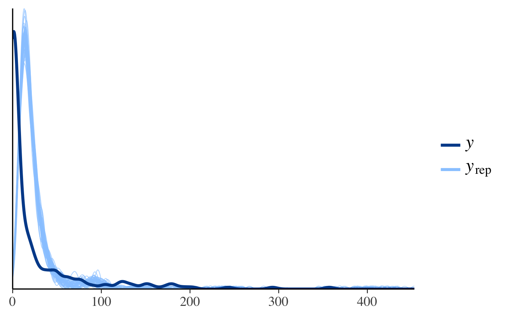
In the plot above, the dark line is the distribution of the observed
outcomes y and each of the 50 lighter lines is the kernel
density estimate of one of the replications of y from the
posterior predictive distribution (i.e., one of the rows in
yrep). This plot makes it easy to see that this model fails
to account for the large proportion of zeros in y. That is,
the model predicts fewer zeros than were actually observed.
To see the discrepancy at the lower values of more clearly we can use
the xlim function from ggplot2 to restrict
the range of the x-axis:
ppc_dens_overlay(y, yrep_poisson[1:50, ]) + xlim(0, 150)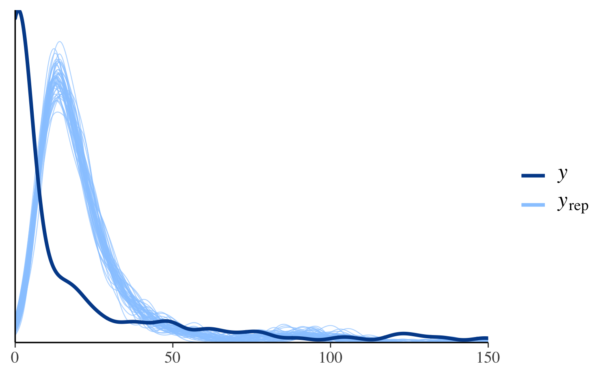
See Figure 6 in Gabry et al. (2019) for
another example of using ppc_dens_overlay.
ppc_hist
We could see the same thing from a different perspective by looking
at separate histograms of y and some of the
yrep datasets using the ppc_hist function:
ppc_hist(y, yrep_poisson[1:5, ])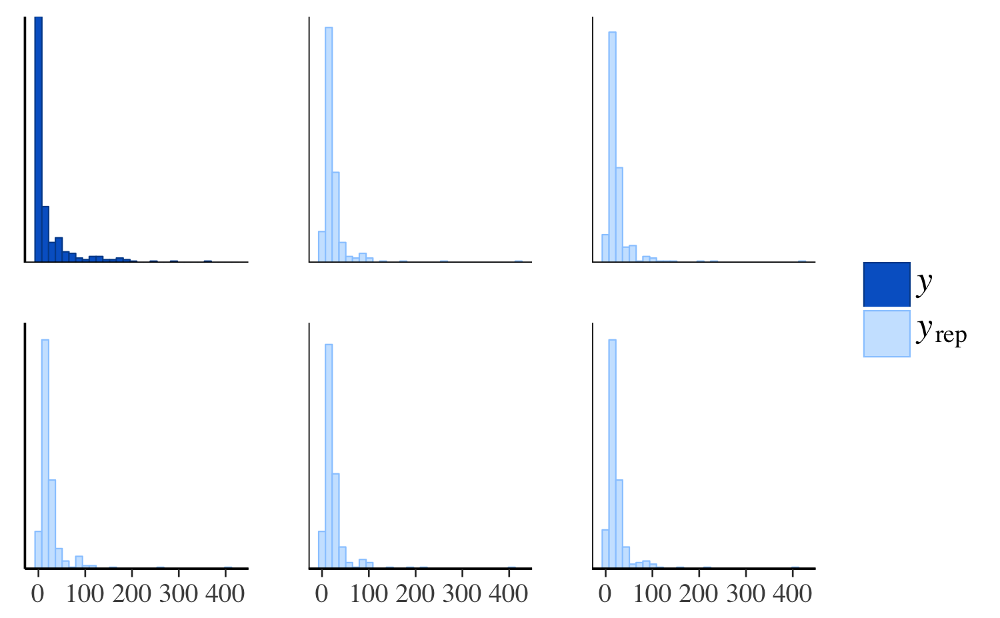
The same plot for the negative binomial model looks much different:
ppc_hist(y, yrep_nb[1:5, ])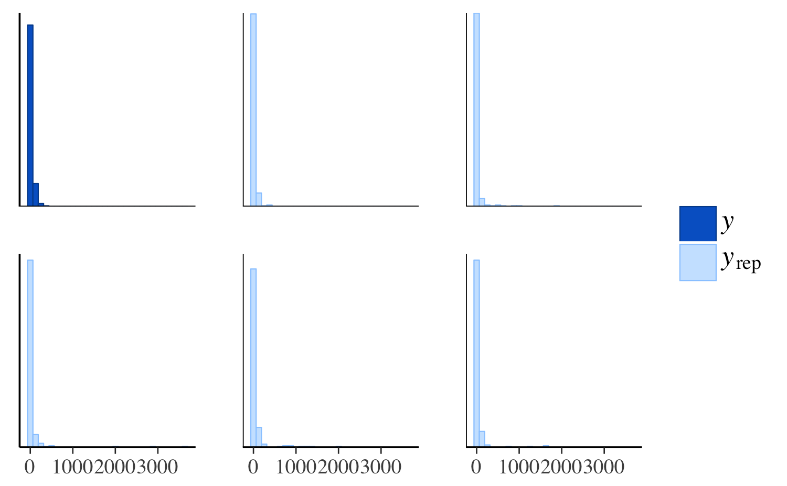
The negative binomial model does better handling the number of zeros in the data, but it occasionally predicts values that are way too large, which is why the x-axes extend to such high values in the plot and make it difficult to read. To see the predictions for the smaller values more clearly we can zoom in:
ppc_hist(y, yrep_nb[1:5, ], binwidth = 20) +
coord_cartesian(xlim = c(-1, 300))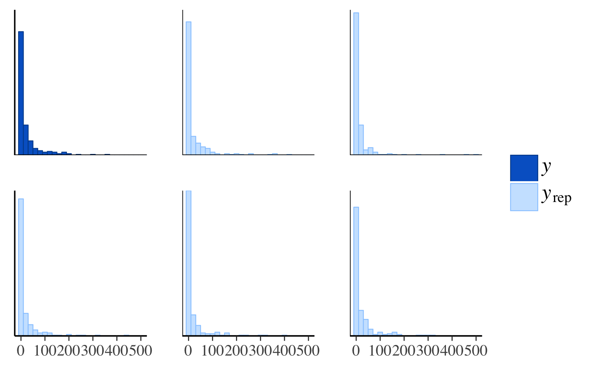
Distributions of test statistics
Another way to see that the Poisson model predicts too few zeros is
to look at the distribution of the proportion of zeros over the
replicated datasets from the posterior predictive distribution in
yrep and compare to the proportion of observed zeros in
y.
ppc_stat
First we define a function that takes a vector as input and returns the proportion of zeros:
prop_zero <- function(x) mean(x == 0)
prop_zero(y) # check proportion of zeros in y[1] 0.3587786The stat argument to ppc_stat accepts a
function or the name of a function for computing a test statistic from a
vector of data. In our case we can specify
stat = "prop_zero" since we’ve already defined the
prop_zero function, but we also could have used
stat = function(x) mean(x == 0).
ppc_stat(y, yrep_poisson, stat = "prop_zero", binwidth = 0.005)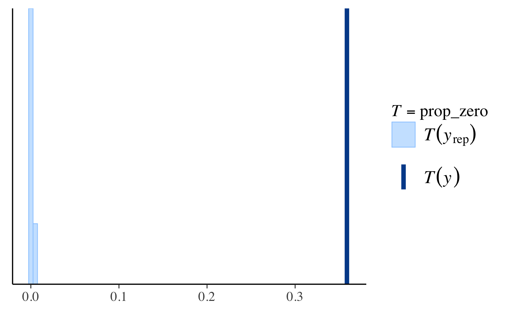
The dark line is at the value \(T(y)\), i.e. the value of the test
statistic computed from the observed \(y\), in this case
prop_zero(y). The lighter area on the left is actually a
histogram of the proportion of zeros in in the yrep
simulations, but it can be hard to see because almost none of the
simulated datasets in yrep have any zeros.
Here’s the same plot for the negative binomial model:
ppc_stat(y, yrep_nb, stat = "prop_zero")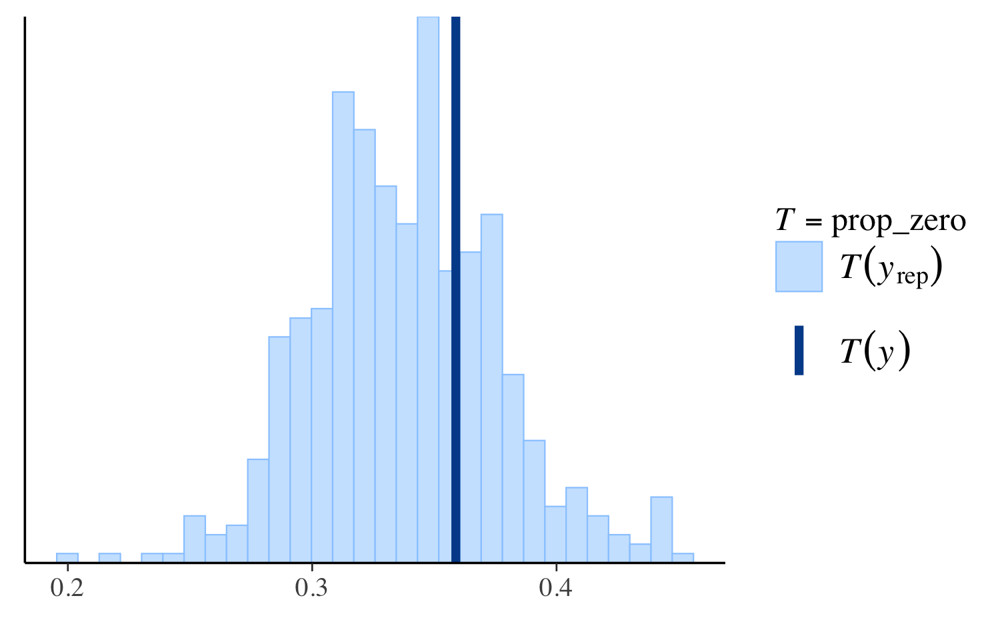
Again we see that the negative binomial model does a much better job predicting the proportion of observed zeros than the Poisson.
However, if we look instead at the distribution of the maximum value in the replications, we can see that the Poisson model makes more realistic predictions than the negative binomial:
ppc_stat(y, yrep_poisson, stat = "max")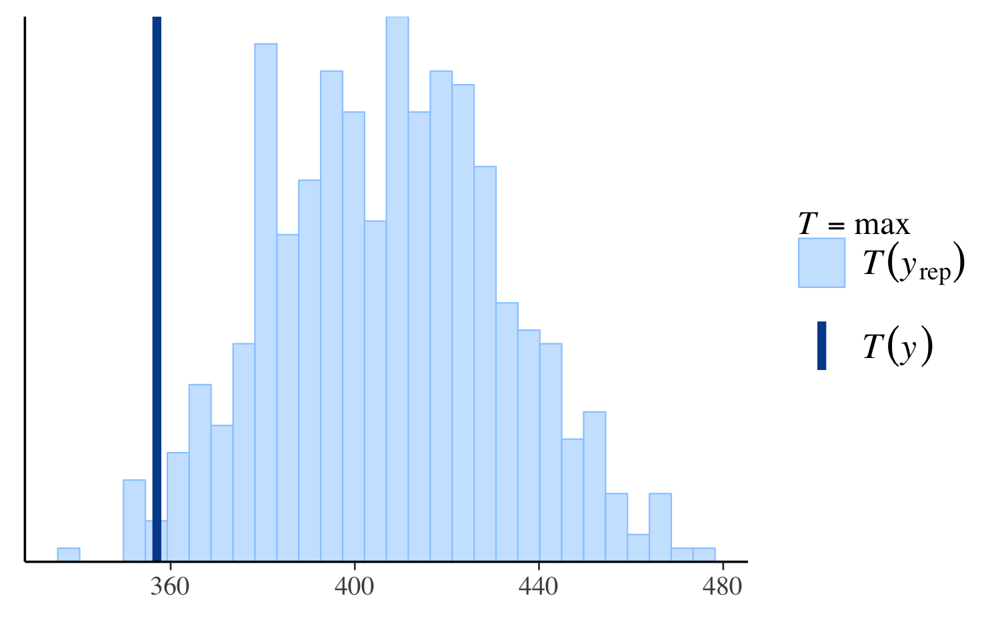
ppc_stat(y, yrep_nb, stat = "max")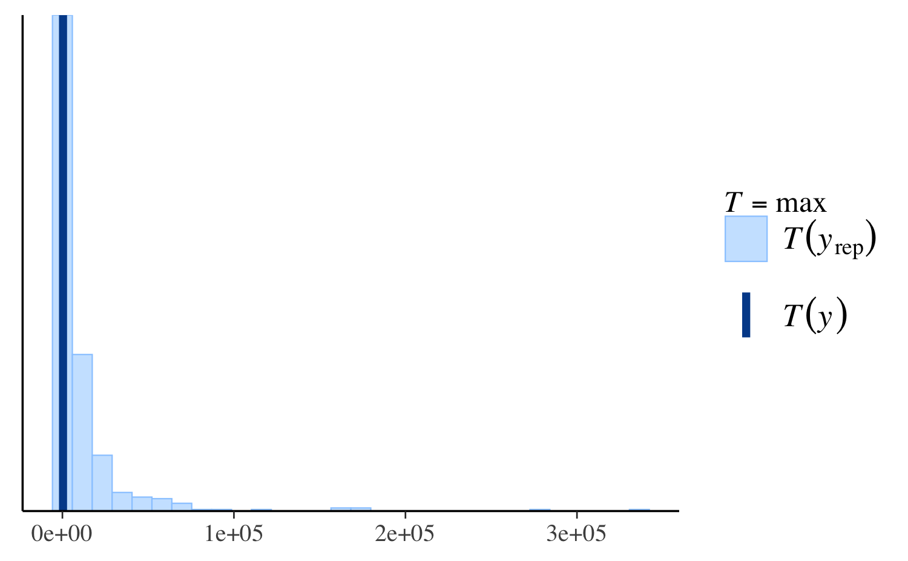
ppc_stat(y, yrep_nb, stat = "max", binwidth = 100) +
coord_cartesian(xlim = c(-1, 5000))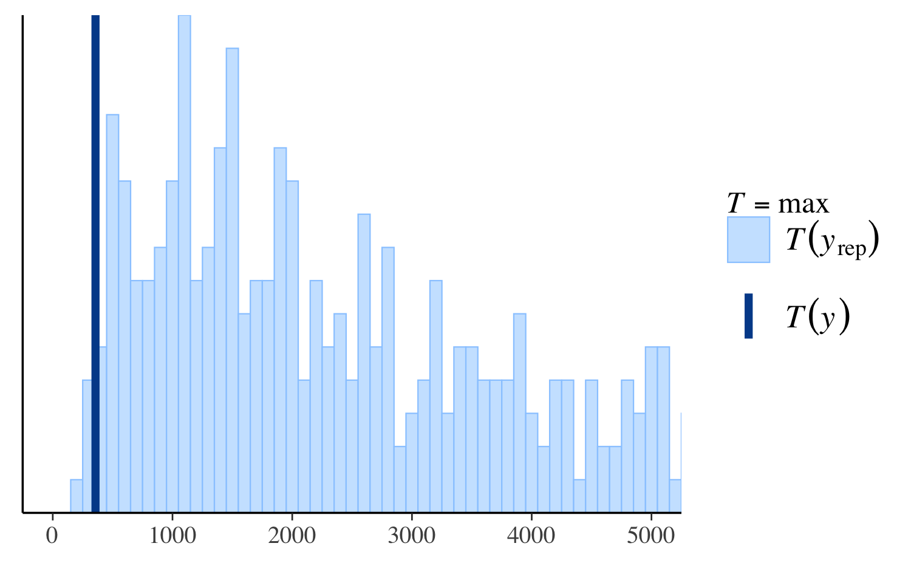
See Figure 7 in Gabry et al. (2019) for
another example of using ppc_stat.
Other PPCs and PPCs by group
There are many additional PPCs available, including plots of
predictive intervals, distributions of predictive errors, and more. For
links to the documentation for all of the various PPC plots see
help("PPC-overview") from R or the online
documentation on the Stan website.
The available_ppc function can also be used to list the
names of all PPC plotting functions:
bayesplot PPC module:
ppc_bars
ppc_bars_grouped
ppc_boxplot
ppc_dens
ppc_dens_overlay
ppc_dens_overlay_grouped
ppc_dots
ppc_ecdf_overlay
ppc_ecdf_overlay_grouped
ppc_error_binned
ppc_error_hist
ppc_error_hist_grouped
ppc_error_scatter
ppc_error_scatter_avg
ppc_error_scatter_avg_grouped
ppc_error_scatter_avg_vs_x
ppc_freqpoly
ppc_freqpoly_grouped
ppc_hist
ppc_intervals
ppc_intervals_grouped
ppc_km_overlay
ppc_km_overlay_grouped
ppc_loo_intervals
ppc_loo_pit_ecdf
ppc_loo_pit_overlay
ppc_loo_pit_qq
ppc_loo_ribbon
ppc_pit_ecdf
ppc_pit_ecdf_grouped
ppc_ribbon
ppc_ribbon_grouped
ppc_rootogram
ppc_scatter
ppc_scatter_avg
ppc_scatter_avg_grouped
ppc_stat
ppc_stat_2d
ppc_stat_freqpoly
ppc_stat_freqpoly_grouped
ppc_stat_grouped
ppc_violin_groupedMany of the available PPCs can also be carried out within levels of a
grouping variable. Any function for PPCs by group will have a name
ending in _grouped and will accept an additional argument
group. The full list of currently available
_grouped functions is:
available_ppc(pattern = "_grouped")bayesplot PPC module:
(matching pattern '_grouped')
ppc_bars_grouped
ppc_dens_overlay_grouped
ppc_ecdf_overlay_grouped
ppc_error_hist_grouped
ppc_error_scatter_avg_grouped
ppc_freqpoly_grouped
ppc_intervals_grouped
ppc_km_overlay_grouped
ppc_pit_ecdf_grouped
ppc_ribbon_grouped
ppc_scatter_avg_grouped
ppc_stat_freqpoly_grouped
ppc_stat_grouped
ppc_violin_groupedppc_stat_grouped
For example, ppc_stat_grouped is the same as
ppc_stat except that the test statistic is computed within
levels of the grouping variable and a separate plot is made for each
level:
ppc_stat_grouped(y, yrep_nb, group = roaches$treatment, stat = "prop_zero")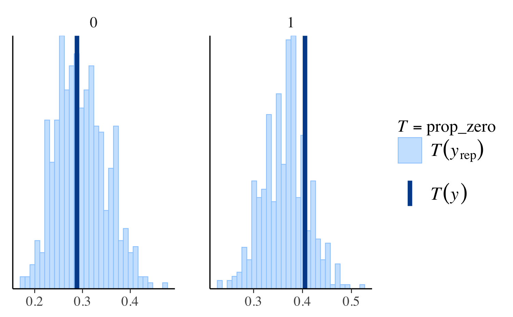
See Figure 8 in Gabry et al. (2019) for
another example of using ppc_stat_grouped.
Providing an interface to bayesplot PPCs from another package
The bayesplot package provides the S3 generic
function pp_check. Authors of R packages for Bayesian
inference are encouraged to define methods for the fitted model objects
created by their packages. This will hopefully be convenient for both
users and developers and contribute to the use of the same naming
conventions across many of the R packages for Bayesian data
analysis.
To provide an interface to bayesplot from your
package, you can very easily define a pp_check method (or
multiple pp_check methods) for the fitted model objects
created by your package. All a pp_check method needs to do
is provide the y vector and yrep matrix
arguments to the various plotting functions included in
bayesplot.
Defining a pp_check method
Here is an example for how to define a simple pp_check
method in a package that creates fitted model objects of class
"foo". We will define a method pp_check.foo
that extracts the data y and the draws from the posterior
predictive distribution yrep from an object of class
"foo" and then calls one of the plotting functions from
bayesplot.
Suppose that objects of class "foo" are lists with named
components, two of which are y and yrep.
Here’s a simple method pp_check.foo that offers the user
the option of two different plots:
# @param object An object of class "foo".
# @param type The type of plot.
# @param ... Optional arguments passed on to the bayesplot plotting function.
pp_check.foo <- function(object, type = c("multiple", "overlaid"), ...) {
type <- match.arg(type)
y <- object[["y"]]
yrep <- object[["yrep"]]
stopifnot(nrow(yrep) >= 50)
samp <- sample(nrow(yrep), size = ifelse(type == "overlaid", 50, 5))
yrep <- yrep[samp, ]
if (type == "overlaid") {
ppc_dens_overlay(y, yrep, ...)
} else {
ppc_hist(y, yrep, ...)
}
}To try out pp_check.foo we can just make a list with
y and yrep components and give it class
foo:
color_scheme_set("purple")
pp_check(x, type = "multiple", binwidth = 0.3)
color_scheme_set("darkgray")
pp_check(x, type = "overlaid")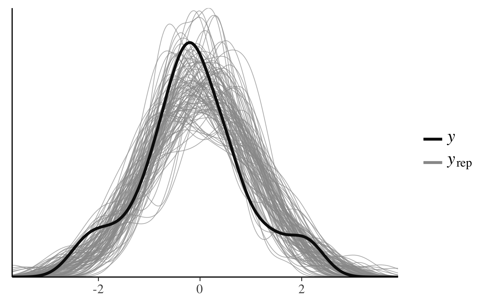
References
Buerkner, P. (2017). brms: Bayesian Regression Models using Stan. R package version 1.7.0. https://CRAN.R-project.org/package=brms
Gabry, J., and Goodrich, B. (2017). rstanarm: Bayesian Applied Regression Modeling via Stan. R package version 2.15.3. https://mc-stan.org/rstanarm/, https://CRAN.R-project.org/package=rstanarm
Gabry, J. , Simpson, D. , Vehtari, A. , Betancourt, M. and Gelman, A. (2019), Visualization in Bayesian workflow. J. R. Stat. Soc. A, 182: 389-402. :10.1111/rssa.12378. (journal version, arXiv preprint, code on GitHub)
Gelman, A., Carlin, J. B., Stern, H. S., Dunson, D. B., Vehtari, A., and Rubin, D. B. (2013). Bayesian Data Analysis. Chapman & Hall/CRC Press, London, third edition.
Stan Development Team. Stan Modeling Language Users Guide and Reference Manual. https://mc-stan.org/users/documentation/